Boolean operations.
CSG geometry is operated on boolean operations. Zencad provides operations for joining, subtracting and intersecting 3d and 2d objects. There are two groups of these operations in zencad:
- over arrays of bodies using the functions union, difference, intersect
- over pairs of bodies using the operators _ + _ - _ ^ _
! Note: ! Do not attempt to boolean a compound line from simple lines or sew a shell from faces. For these manipulations, there are special stitching procedures outlined in the relevant sections.
Union.
Сигнатура:
# Функция:
result = union(array)
# Оператор:
result = shp0 + shp1
Пример:
#with operators:
sphere(r=10) + cylinder(r=5, h=10, center=True) + cylinder(r=5, h=10, center=True).rotateX(deg(90))
#with function:
union([
sphere(r=10),
cylinder(r=5, h=10, center=True),
cylinder(r=5, h=10, center=True).rotateX(deg(90))
])
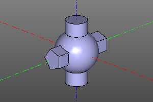
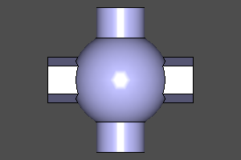
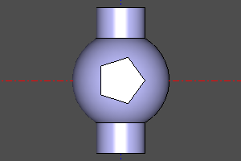
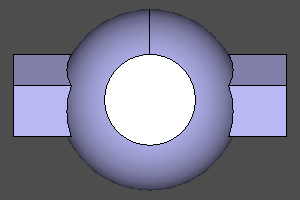
Difference.
Сигнатура:
# Функция:
result = difference(array)
# Оператор:
result = shp0 - shp1
Пример:
#with operators:
sphere(r=10) - cylinder(r=5, h=10, center=True) - cylinder(r=5, h=10, center=True).rotateX(deg(90))
#with function:
difference([
sphere(r=10),
cylinder(r=5, h=10, center=True),
cylinder(r=5, h=10, center=True).rotateX(deg(90))
])
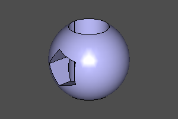
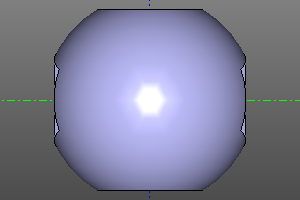
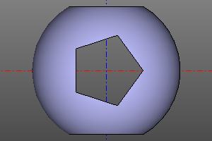
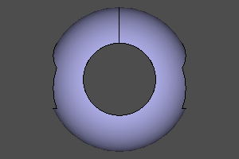
Intersect.
Сигнатура:
# Функция:
result = intersect(array)
# Оператор:
result = shp0 ^ shp1
Пример:
#with operators:
sphere(r=10) ^ cylinder(r=5, h=10, center=True) ^ cylinder(r=5, h=10, center=True).rotateX(deg(90))
#with function:
intersect([
sphere(r=10),
cylinder(r=5, h=10, center=True),
cylinder(r=5, h=10, center=True).rotateX(deg(90))
])
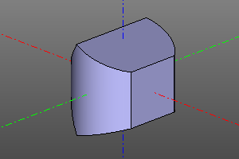
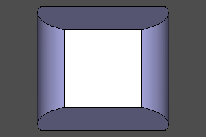
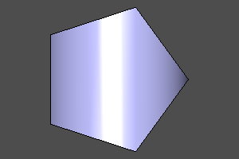
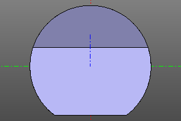
Crossing shells.
Let's twin the operation intersect, which calculates the intersection of the shells of bodies.
Сигнатура:
# Функция:
result = section(a, b)
Пример:
m0 = section(box(10, center=True) - sphere(4))
m1 = section(box(10, center=True), sphere(7))
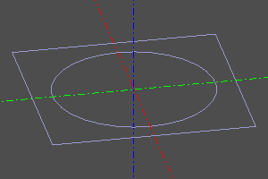
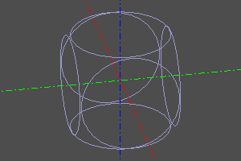
Splitting and slicing by a plane.
split(body, tools) partitions a body with one or more Shape tools and returns
a SplitResult: a lazy, deterministically ordered sequence of resulting
solids. Empty tools and a tool that does not divide the body (including a
tangent tool) raise ValueError.
slice(body, z=..., axis=...) is the convenient plane form. Its SliceResult
unpacks as (lower, upper), ordered from the negative to the positive side of
the plane normal. An arbitrary plane may be a planar face or an
(origin, normal) pair. A result other than exactly two solids is ambiguous
and raises ValueError.
parts = split(box(10), (infplane().up(3), infplane().up(7)))
lower, upper = slice(box(10), z=4)
left, right = slice(box(10), z=2, axis="x")
negative, positive = slice(box(10), plane=((0, 5, 0), (0, 1, 0)))
Boolean operations on 2D solids.
Just like with 3D objects, the above operations can be applied to 2D objects as long as they are in the same plane.
Пример:
m0 = circle(10) - square(10)
m1 = circle(10) + square(10)
m2 = circle(10) ^ square(10)
m3 = section(circle(10), square(10))
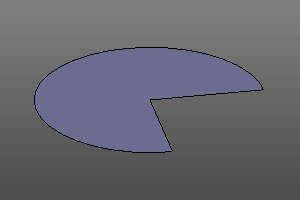
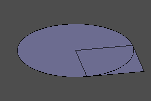
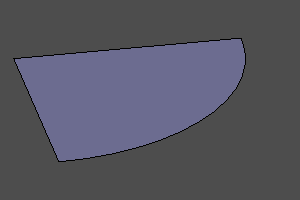
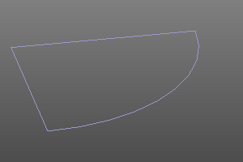